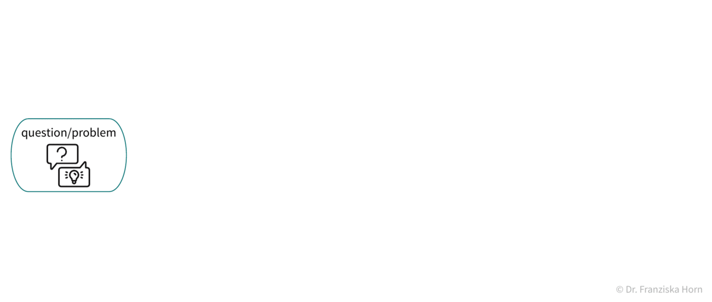

consulting
Your data - may that be information about your customers, sensor measurements from the machines on your assembly line, images, or text documents - is like a rough diamond: treated with the right tools, it will be invaluable!
Successfully utilizing this data, for example, to gain new insights about customer churn, monitor your machines with a predictive maintenance approach, or automate boring and error-prone processes, requires two things: a deep understanding of the problem and data at hand, as well as the intimate knowledge of a wide array of machine learning algorithms, ranging from basic data analysis tools to natural language processing, computer vision, and deep learning methods. Luckily, the first part is already taken care of, as you are an expert in your domain. And I am here to help you choose, apply, and evaluate the right machine learning models to transform your data into value.
I'd be happy to support you at all stages of the data science workflow: 
- define the scope of your problem and outline how ML and AI can help you solve it
- implement and evaluate different ML algorithms to analyze your data and/or
- advise on and discuss potential solutions with the data scientists in your team
- support you in deploying a production-ready machine learning solution
I prefer to work in an agile manner with short iterations and in close collaboration with the data owners in your team to ensure that the machine learning solution fits all your needs and generalizes well even to potentially novel settings encountered in your day-to-day operations. Furthermore, I believe that a sustainable AI strategy for any company includes setting up its own data science team, which is why my overarching objective is to help you build this team and get it to a point where you don't need my services anymore.
Have a look at the different consulting packages I offer - and if you had something else in mind, feel free to contact me anyways!
ML coffee break
Get feedback on a project idea
You have an idea for a potential machine learning project and want to get some feedback if this is worth a try and what the first steps would be? Schedule a free, noncommittal 30 minutes coffee break with me, where we can discuss the details of your project and I can tell you where to start, as well as what difficulties might lie ahead. Just send me an e-mail with your project idea and some time slots where we could schedule a call.
Have a look at the introductory chapter of my machine learning book to get some ideas for how you can create value with ML & data science and work through this ML project worksheet to get a head start.
ML potential package
Find out where you should be applying machine learning
Everyone keeps telling you that 'AI' is the next big thing, but you're not sure where to start?
The ML potential package includes a workshop where I give you an overview of how ML works and what it can do for you and together we develop:
- a list of potential ML project ideas, ranked based on their feasibility and business impact
- a list of concrete next steps that you need to take to get ready for your first ML project (e.g., improvements in the data infrastructure / additional data that needs to be collected)
Additionally, I can provide you with some research on what your competitors are doing in terms of AI, including a reality check of possibly exaggerated press releases.
ML project package
Get a machine learning solution implemented
You already have a feasible & valuable project idea, but your team lacks the machine learning know-how to realize it on their own?
I can help you with the implementation of the ML solution, as well as its integration into your existing workflow and infrastructure. This includes:
- assessment of and tips for improving your data infrastructure
- implementation of a custom ML solution tailored to your needs and that can be used without any reoccurring licensing fees
- support for your team in setting up the necessary infrastructure to deploy the ML solution and integrate it into your existing workflows
- coaching for your team on how to monitor & maintain the ML model to ensure you are prepared for possible data drifts and do not have to rely on me to keep the ML solution running in the future (but of course I'm always available for additional support if needed!)
ML hiring package
Grow your internal data science team
For a data science endeavor to be successful, a thorough understanding of the problem setting and data is at least as important as knowing the ins and outs of the different machine learning algorithms. Therefore, if you decide that you might benefit from some long-term data science expertise, I strongly suggest you build your own data science team. While external consultants may have a broader knowledge of the different tools and can advise you on which advanced algorithms are worth considering for your use case, they can never have the same deep understanding of your data as someone working at your company.
But finding the right people is often tricky. Data scientists are still in high demand, which means they can be picky when it comes to applying for jobs. Furthermore, a lot of people who simply took an online course on machine learning like to call themselves "data scientist" nowadays, while it takes a much deeper understanding and practical knowledge to provide a meaningful contribution to your team.
To help you build your data science team, this package includes:
- assessment of which skills your company needs to achieve your ML goals (Data Scientist? ML Engineer? What's the difference?)
- compelling job postings, asking for meaningful qualifications instead of random buzzwords
- screening of CVs & conducting technical interviews
- [optional] implementation of a personalized hiring challenge (like this one), including programming and theoretical questions tailored to your requirements, to find the perfect candidate
ML workshops & individual coaching sessions
I offer (remote) machine learning courses for different audiences:

Take your internal data science team to the next level
Your company already has a data science team, but a lot of the people are in junior positions or come from other areas (i.e., "Quereinsteiger" in German) and you want to get them up to speed with ML best practices?
After the machine learning course based on my book (incl. many hands-on exercises), everyone will be on the same page and familiar with the most common supervised, unsupervised, and deep learning algorithms, as well as how to avoid common pitfalls in their application. The course follows a flipped classroom strategy, where the participants can work through the materials at their own speed, while I'm available for questions and to give feedback on the exercises.
Furthermore, to help you or your team excel in current projects, I additionally offer one-on-one remote data science coaching sessions. In these individual coaching sessions you get:
- feedback on the proposed methodology and/or
- new ideas for what else you could try
- feedback on your (Python) code and tips for how to improve it
- diagnosis of why your existing approach & models don't bring the desired performance
- templates with code for reoccurring problems
- development of custom, advanced models (e.g., a novel neural network architecture tailored to your use case)
- ... and whatever else I can help you with to make sure you reach your goals.
You can think of these sessions as machine learning office hours, where you or your team can get feedback and new impulses for solving day-to-day challenges.